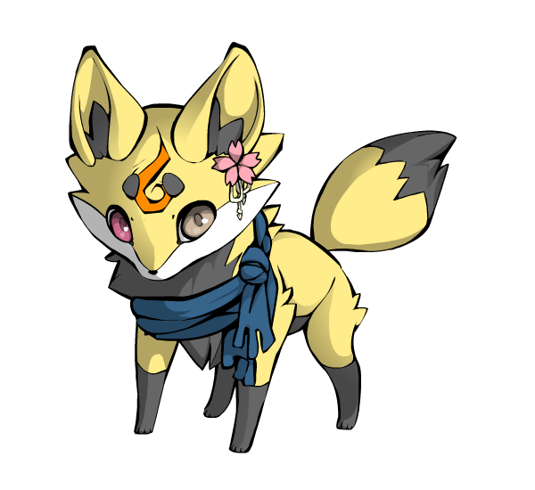

Info

Shimon Dotera
1995/9/23
うぇぶうぇぶしてる大学生♂(22)。相棒は@cany_squid。MHW/Splatoon2/カービィ/ポケモン/アニメ/声優/ヒロアカ/進撃/青エク/喰種/住野よる/ボイパ/ベース/アカペラ/澤野弘之/Pentatonix/星野源/Superfly/[Alexandros]/...
1995/9/23
うぇぶうぇぶしてる大学生♂(22)。相棒は@cany_squid。MHW/Splatoon2/カービィ/ポケモン/アニメ/声優/ヒロアカ/進撃/青エク/喰種/住野よる/ボイパ/ベース/アカペラ/澤野弘之/Pentatonix/星野源/Superfly/[Alexandros]/...